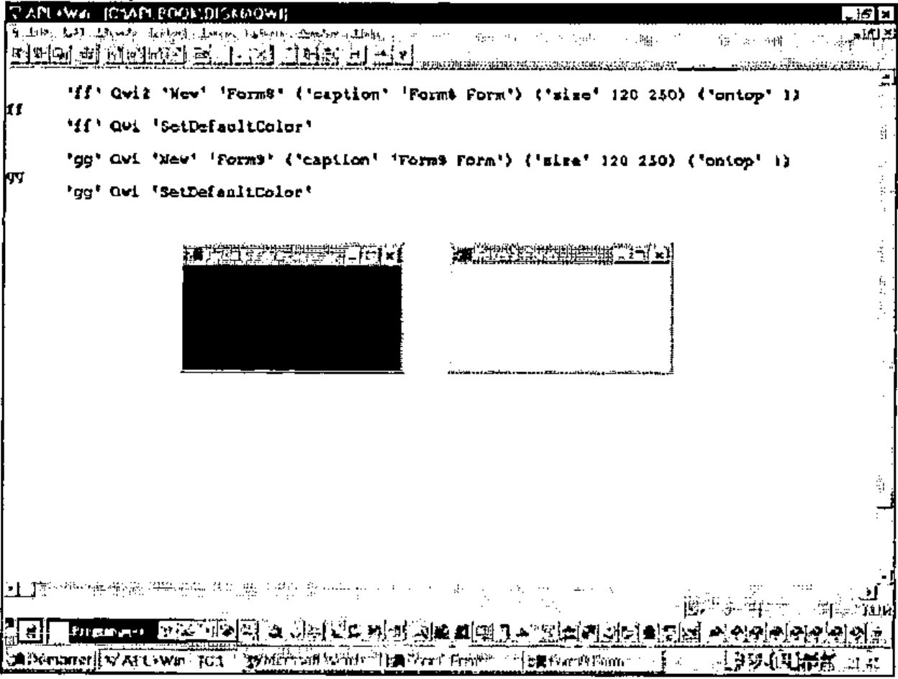

Object Oriented Programming with APL+Win (Part II)
Vector 14:3, page 109
Transcribed from the printed issue; not yet reviewed. Read it in the PDF of the issue, page 109
I want to thank Chris Lee from Softmed who inspired me with his UDC (User Defined Classes) concept.
Introduction¶
This long article, published in Vector in 2 parts, is extracted from the Monthly APL+Win Training Program available on the Internet from the Lescasse Consulting Web site at www.lescasse.com. It represents one of 3 chapters included in the APL+Win Training for May 97.
Inheritance¶
The way of programming with Qwi described in this Chapter is really Object Oriented Programming with APL+Win. To convince you about this assertion, read on.
First, we are really creating new classes of objects. When you create a new class, you choose a class name for it (example: Form or Form5 or MaskEdit, etc.) and then you create one APL function with a name that matches the new object’s class name you’ve chosen.
Remember that you can replace existing APL+Win classes (like Form) with your own class of the same name.
You may also overload existing class properties or methods with your own behaviour. This is exactly what we have done in all examples so far with the New method, which does exist for the APL+Win standard Form class, but which we overloaded with additional functionality in our Form1 to Form5 classes.
Second, we can easily go one step further and use inheritance, one of the basic concepts of all Object Oriented development systems. We will now describe how to do that.
Let’s suppose that we would like our new Form class to behave exactly like the Form5 class except that the Esc key would be a shortcut key used to close the form. We could change our Form5 function by adding one more line in the overloaded New method code and rename Form5 to Form6 (which you will find in workspace QWI.W3). The line to add would be:
This line creates an invisible button (invisible because its size is set to 0 0!) with style 2 on our form. Because this button has style 2, it is known by the APL+Win system as a Cancel button which is automatically clicked by pressing the Esc key, therefore closing the form.
So, we have perfectly solved our problem of creating a new class of forms which would react to pressing the Esc key by closing themselves. However, there are several drawbacks to this approach:
- first, we are duplicating the Form5 code to become Form6 and losing precious workspace room
- second, and more importantly, if we need to make any change in our Form5 class, we must make the same changes in Form6 class, so that Form6 objects continue to behave exactly like Form5 objects (except for the added Esc key functionality)
Could we try to take advantage of the Object Oriented inheritance concept instead? Yes, and it is very easy. Let’s just design a new Form7 class as follows:
∇ A Form7 B;R;class
[1] ⍝∇ A Form7 B -- User Defined Form7 Class
[2] ⍝∇ A ↔ object name
[3] ⍝∇ B ↔ 'property'
[4] ⍝∇ or 'property' value
[5] ⍝∇ or 'Method'
[6] ⍝∇ or 'Method' argument1 ... argumentN
[7] ⍝∇ Requires: (F) QwiRegister
[8] ⍝∇ Copyright (c) 1997 Eric Lescasse [9mar97]
[9]
[10] :select ↑B
[11] :case 'New' ⍝ constructor
[12] A Form5 B ⍝ inherits Form5 class
[13] QwiRegister A ⍝ save class name
[14] R←(A,'.bnEsc')⎕wi'New' 'Button'('size' 0 0)('style' 2)
[15]
[16] :else
[17] A Form5 B ⍝ inherits Form5 class
[18]
[19] :end
∇
That’s a very simple and crystal clear way of implementing inheritance.
When the Form7 class function is called with an argument starting with 'New' to create a new instance of a Form7 kind of a form, the Form5 New method code is used instead (line 12) and is simply followed by the additional behaviour we wanted (line 14). Note that we must not forget to register our new class (line 13).
For all other Form7 class properties and methods, the behaviour is inherited from the Form5 class (line 17).
You may want to check if this works OK. Try:
click in the form to set the focus to it and press the Esc key: this closes your form.
Then try:
The form moves as expected. The ontop property and the Move method are purely inherited from the Form5 class!
I suppose you see how this brings a terrific power to APL+Win programming!
APL+Win allows you to do Object Oriented Programming and in a manner which is most simple.
Having understood inheritance as shown above, we could have designed our Form1 to Form5 classes as a hierarchy of classes, all descendants from the APL+Win Form class, according to the following tree:
- Form
- Form1 — Delete
- Form2 — caption, font, scale
- Form3 — other APL+Win properties
- Form4 — ontop
- Form5 — Move
- Form7 — Esc key
- Form5 — Move
- Form4 — ontop
- Form3 — other APL+Win properties
- Form2 — caption, font, scale
- Form1 — Delete
In the above tree, I have shown at each level of the tree, the changed or added properties and methods.
Exercise¶
I leave it as an exercise for you to start a new workspace, copy functions Qwi, HANDLERFOR, Form1 from workspace QWI.W3 in it and rewrite Form2, Form3, Form4, Form5 and Form7 implementing inheritance at all levels.
Then add a new property to the New method of the Form1 class, like changing the default form size to 10 30, and check that all other classes (Form2 to Form7) do inherit correctly from the Form1 class.
Polymorphism¶
Another unique characteristic of Object Oriented Programming is polymorphism whereby different objects respond to the same message with their own unique behaviour.
How can we use polymorphism with our new objects? The answer is simple: if you assume that invoking an object method is in fact sending a message to the object instructing it to run a named piece of code (the method), then we simply need to implement methods sharing the same name in different ways according to the classes in which they are implemented.
An example will help understand this polymorphism concept. Let’s define 2 new classes of objects Form8 and Form9 which both inherit from class Form7. In both Form8 and Form9 classes, we will implement a SetDefaultColor method, which sets the form background colour to some default class color when it is invoked. However we will design SetDefaultColor so that it changes the colour of Form8 forms to black and the colour of Form9 forms to white. Here are our 2 new class functions:
∇ A Form8 B;R;class
[1] ⍝∇ A Form8 B -- User Defined Form8 Class
[2] ⍝∇ A ↔ object name
[3] ⍝∇ B ↔ 'property'
[4] ⍝∇ or 'property' value
[5] ⍝∇ or 'Method'
[6] ⍝∇ or 'Method' argument1 ... argumentN
[7] ⍝∇ Requires: (F) QwiRegister
[8] ⍝∇ Copyright (c) 1997 Eric Lescasse [9mar97]
[9]
[10] :select ↑B
[11] :case 'New' ⍝ constructor
[12] A Form7 B ⍝ inherits Form7 class
[13] QwiRegister A ⍝ save class name
[14]
[15] :case 'SetDefaultColor' ⍝ SetDefaultColor method
[16] A ⎕wi 'color' 0 ⍝ set background color to black
[17]
[18] :else
[19] A Form7 B ⍝ inherits Form7 class
[20]
[21] :end
and:
∇ A Form9 B;R;class
[1] ⍝∇ A Form9 B -- User Defined Form9 Class
[2] ⍝∇ A ↔ object name
[3] ⍝∇ B ↔ 'property'
[4] ⍝∇ or 'property' value
[5] ⍝∇ or 'Method'
[6] ⍝∇ or 'Method' argument1 ... argumentN
[7] ⍝∇ Requires: (F) QwiRegister
[8] ⍝∇ Copyright (c) 1997 Eric Lescasse [9mar97]
[9]
[10] :select ↑B
[11] :case 'New' ⍝ constructor
[12] A Form7 B ⍝ inherits Form7 class
[13] QwiRegister A ⍝ save class name
[14]
[15] :case 'SetDefaultColor' ⍝ SetDefaultColor method
[16] A ⎕wi 'color' (3⍴255) ⍝ set background color to white
[17]
[18] :else
[19] A Form7 B ⍝ inherits Form7 class
[20]
[21] :end
∇
Now let’s try to create instances of the Form8 and Form9 classes, which we will distinguish by changing their caption property and let’s send them a SetDefaultColor message.
'ff' Qwi2 'New' 'Form8' ('caption' 'Form8 Form') ('size' 120 250) ('ontop' 1)
ff
'ff' Qwi2 'SetDefaultColor'
'gg' Qwi2 'New' 'Form9' ('caption' 'Form9 Form') ('size' 120 250) ('ontop' 1)
gg
'gg' Qwi2 'SetDefaultColor'
Here is what you will see.

This is exactly what polymorphism is.
Polymorphism refers to the ability of a given message to assume different functions, depending upon to what object it is sent.
Using Superclass Methods¶
It may sometimes happen that you would like to use not the class definition of a (possibly polymorphic) method, but its superclass definition instead. A superclass is simply the parent class which a given class inherits from.
For example, the Form8 superclass is Form7.
Let’s assume that we have also implemented a SetDefaultColor method in the Form7 class. Change class function Form7 as follows and rename it as Form10:
∇ A Form10 B;R;class
[1] ⍝∇ A Form10 B -- User Defined Form10 Class
[2] ⍝∇ A ↔ object name
[3] ⍝∇ B ↔ 'property'
[4] ⍝∇ or 'property' value
[5] ⍝∇ or 'Method'
[6] ⍝∇ or 'Method' argument1 ... argumentN
[7] ⍝∇ Requires: (F) QwiRegister
[8] ⍝∇ Copyright (c) 1997 Eric Lescasse [9mar97]
[9]
[10] :select ↑B
[11] :case 'New' ⍝ constructor
[12] A Form5 B ⍝ inherits Form5 class
[13] QwiRegister A ⍝ save class name
[14] R←(A,'.bnEsc')⎕wi'New' 'Button'('size' 0 0)('style' 2)
[15]
[16] :case 'SetDefaultColor' ⍝ SetDefaultColor method
[17] A ⎕wi 'color' 255 ⍝ set background color to red
[18]
[19] :else
[20] A Form5 B ⍝ inherits Form5 class
[21]
[22] :end
∇
Then change function Form8 to Form11 as follows:
∇ A Form11 B;R;class
[1] ⍝∇ A Form11 B -- User Defined Form11 Class
[2] ⍝∇ A ↔ object name
[3] ⍝∇ B ↔ 'property'
[4] ⍝∇ or 'property' value
[5] ⍝∇ or 'Method'
[6] ⍝∇ or 'Method' argument1 ... argumentN
[7] ⍝∇ Requires: (F) QwiRegister
[8] ⍝∇ Copyright (c) 1997 Eric Lescasse [9mar97]
[9]
[10] :select ↑B
[11] :case 'New' ⍝ constructor
[12] A Form10 B ⍝ inherits Form10 class
[13] QwiRegister A ⍝ save class name
[14]
[15] :case 'SetDefaultColor' ⍝ SetDefaultColor method
[16] A ⎕wi 'color' 0 ⍝ set background color to black
[17]
[18] :else
[19] A Form10 B ⍝ inherits Form10 class
[20]
[21] :end
∇
We now have a new class of forms: Form11 which knows about the SetDefaultColor message and inherits the Form10 class.
The Form10 class also understands the SetDefaultColor message, albeit in a different manner and the Form10 class inherits the Form5 class.
When we are working with a Form11 kind of a form, sending a SetDefaultColor message to the form results in running the SetDefaultColor method of the Form11 class.
If you want to run the SetDefaultColor method instead in the Form11 superclass (i.e. in class Form10) you should send a super SetDefaultColor message to the Form11 form.
Example:
Let us first invoke the Form11 class SetDefaultColor method:
This results in a black form being displayed on the screen.
And now, let’s call the Form11 superclass SetDefaultColor instead:
This results in a red form being displayed on the screen.
For this to work properly, you need to change utility Qwi2 to now be Qwi3, as follows:
∇ R←A Qwi3 B;C;D;E;F;G;I;P;T;⎕elx
[1] ⍝∇ R←A Qwi3 B -- ⎕WI emulator
[2] ⍝∇ ⎕wself←'object_name' Qwi3 'New' 'class_name'
[3] ⍝∇ ⎕wself←'object_name' Qwi3 'New' 'class_name'('prop1' value1)...
[4] ⍝∇ res← ['object_name'] Qwi3 'prop'
[5] ⍝∇ ['object_name'] Qwi3 'prop' value
[6] ⍝∇ ['object_name'] Qwi3 ('prop1' value1)...('propN' valueN)
[7] ⍝∇ res← ['object_name'] Qwi3 'Get_Method' [arguments]
[8] ⍝∇ ['object_name'] Qwi3 'Set_Method' [arguments]
[9] ⍝∇ Copyright (c) 1997 Eric Lescasse [8mar97]
[10]
[11] ⎕elx←'⍎HANDLERFOR ⎕DM'
[12] :if 2≠⎕nc'A' ⋄ A←⎕wself ⋄ :end ⍝ ⎕WSELF if no left arg
[13] :if 1=≡B ⋄ B←,⊂B ⋄ :end ⍝ be sure B is nested
[14] :if 'New'≡↑B ⍝ if method is 'New'
[15] C←2⊃B ⍝ get specified class name
[16] B←(⊂'New' C),2↓B ⍝ rebuild argument
[17] :elseif 0≠⍴A ⎕wi'self' ⍝ else if object A exists
[18] :if 0≡C←↑D←A ⎕wi'∆class' ⍝ get registered class name
[19] ⎕error'Use ⎕WI instead of Qwi3' ⍝ if none signal error
[20] :end
[21] :else ⍝ if not 'New' & not an object
[22] ⎕error'Unknown object: ',A ⍝ signal error
[23] :end
[24] :if 2=≡B ⋄ B←,⊂B ⋄ :end ⍝ ensure B depth is ≥ 3
[25] E←2>≡¨B ⋄ (E/B)←⊂¨E/B ⍝ ensure each element is of depth 2
[26] B←,B ⋄ '#'⎕wi'∆wres'(0 0⍴0) ⍝ define default result
[27] :for I :in ⍳⍴B ⍝ for each element in argument
[28] :if 'super '≡6↑P←↑I⊃B ⍝ if argument starts with 'super '
[29] E←(1+F←+/P ⎕ss'super')⊃D ⍝ retrieve the super class name
[30] G←⊂(5×F)↓P~' ' ⍝ method name
[31] ⍎'A ',E,' G' ⍝∇{VALUE:⎕error'Unknown class: ',E}
[32] :else ⍝ else
[33] ⍎'A ',C,' I⊃B' ⍝∇{VALUE:⎕error'Unknown class: ',C}
[34] :end
[35] :end
[36] R←'#'⎕wi'∆wres' ⍝ return result saved in ∆wres
∇
As you can see, it is very easy to implement the super keyword in order to superclass methods in replacement of the standard class method.
Overloading Standard Properties¶
Another task you may want to perform for your new objects consists in extending some standard APL+Win properties, like the properties and methods properties.
It would be nice if we could use a properties property to know which user-defined properties are available for a given user-defined object and a methods property to ask about available methods.
For example we could define a Qwi4 function that would work as follows:
'ff' Qwi4 'New' 'Form11'
ff
'ff' Qwi4 'properties'
ontop
'ff' Qwi4 'methods'
New Move SetDefaultColor
We could try to implement the properties and methods properties into the class function (here Form5) as we did for the ontop property and the Move method. However that would mean we would have to implement them in every class function we develop, for every new object we invent. This would mean an important loss of time and room in the workspace.
Since we want properties and methods to be available properties for any object we create, we should find a way to implement these properties within the Qwi function itself. At first sight, it does not seem too complex when we notice that every user-defined object property or method has a corresponding :case statement in a class function. So we just need to write a program that will extract all lowercase names following each :case in the class function and we will have the list of properties we are looking for.
But then we are facing another difficulty which is engendered by inheritance: all the properties that a class knows are not necessarily defined in the class function pertaining to this class. Some (or all) of them might very well be defined in other classes from which this class inherits.
In order to best solve this problem, I have taken a design decision: this decision has been that the ∆class user-defined data property should contain not only the object class, but the whole list of ancestor classes to this class. Let’s take a few minutes explaining how this helps.
Example:
'ff' ⎕wi '∆class'
Form11 Form10 Form5 Form
]display 'ff' ⎕wi '∆class'
┌→────────────────────────────────┐
│┌→─────┐ ┌→─────┐ ┌→────┐ ┌→───┐ │
││Form11│ │Form10│ │Form5│ │Form│ │
│└──────┘ └──────┘ └─────┘ └────┘ │
└∊────────────────────────────────┘
This means that ff is a Form11 kind of a form which inherits from class Form10 which itself inherits from class Form5 which itself inherits from the standard APL+Win Form class.
The ∆class user-defined data property is recorded at each level of the class hierarchy by the QwiRegister function which I delayed discussing until now. Here it is:
∇ QwiRegister A;B;C;D;⎕io
[1] ⍝∇ QwiRegister A -- Sets the object A ∆class property to B
[2] ⍝∇ A ↔ object name
[3] ⍝∇ Example: QwiRegister 'ff'
[4] ⍝∇ Copyright (c) 1997 Eric Lescasse [10mar97]
[5]
[6] ⎕io←1 ⍝ environement
[7] B←A ⎕wi'class' ⍝ APL+Win class name
[8] C←A ⎕wi'∆class' ⍝ class descent so far
[9] :if C≡0 ⍝ if ∆class not yet defined
[10] A ⎕wi'∆class'(C←⊂B) ⍝ register APL+Win class name
[11] :end ⍝ end
[12] D←⊂(¯1+D⍳'[')⍴D←⎕si[2;] ⍝ calling function name (=UDC name)
[13] A ⎕wi'∆class'(D,C) ⍝ append UDC name
∇
This function is easy to understand: any user-defined class must derive from a standard APL+Win class. At the time we create a new instance of class (with the New method), the ∆class property is not yet defined (i.e. is scalar 0) and therefore we register the APL+Win class from which our user-defined class derives (line 10). Then we append the user-defined class name (line 13) at this level of registration by simply getting the calling class function name (line 12).
Recording the whole class descent in variable ∆class is a great help in our search for the complete list of properties of a given class (including inherited properties). Because now, all we have to do is to write a QwiProperties which is able to retrieve the properties of one level and then loop calling QwiProperties at all levels of the class descent.
Here is the QwiProperties function:
∇ R←QwiProperties A;C;D
[1] ⍝∇ R←QwiProperties A -- Return all properties from class A
[2] ⍝∇ Example: QwiProperties 'Form5'
[3] ⍝∇ Copyright (c) 1997 Eric Lescasse [10mar97]
[4]
[5] C←(⎕vr(,A)~' ')~' ' ⍝ get class function ⎕vr & remove blanks
[6] D←C ⎕ss ']:case''' ⍝ find where :case statements occur
[7] R←7↓¨D ⎕penclose C ⍝ partition ⎕vr accordingly
[8] R←(∧\¨R≠'''')⎕repl¨R ⍝ select property (or method) names
[9] R←(∊(↑¨R)∊'abcdefghijklmnopqrstuvwxyz∆')/R ⍝ keep only lowercase names
[10] R←R~('.'∊¨R)/R ⍝ remove event properties
[11] R←⊃R~((⊂'private')≡¨7↑¨R)/R ⍝ remove private properties
[12] R←R[⎕av⍋R;] ⍝ sort list of properties
∇
The comments in QwiProperties function make it self-explanatory.
Similarly we can define a QwiMethods utility, which reads:
∇ R←QwiMethods A;C;D
[1] ⍝∇ R←QwiMethods A -- Return all methods from class A
[2] ⍝∇ Example: QwiMethods 'Form5'
[3] ⍝∇ Copyright (c) 1997 Eric Lescasse [10mar97]
[4]
[5] C←(⎕vr(,A)~' ')~' ' ⍝ get class function ⎕vr & remove blanks
[6] D←C ⎕ss ']:case''' ⍝ find where :case statements occur
[7] R←7↓¨D ⎕penclose C ⍝ partition ⎕vr accordingly
[8] R←(∧\¨R≠'''')⎕repl¨R ⍝ select property (or method) names
[9] R←⊃(∊(↑¨R)∊'ABCDEFGHIJKLMNOPQRSTUVWXYZ')/R ⍝ keep uppercase names
[10] R←R[⎕av⍋R;] ⍝ sort list of methods
∇
The only remaining task is to change Qwi3 to Qwi4 as follows:
∇ R←A Qwi4 B;C;D;E;F;G;I;P;⎕elx
[1] ⍝∇ R←A Qwi4 B -- ⎕WI emulator
[2] ⍝∇ ⎕wself←'object_name' Qwi4 'New' 'class_name'
[3] ⍝∇ ⎕wself←'object_name' Qwi4 'New' 'class_name'('prop1' value1)...
[4] ⍝∇ res← ['object_name'] Qwi4 'prop'
[5] ⍝∇ ['object_name'] Qwi4 'prop' value
[6] ⍝∇ ['object_name'] Qwi4 ('prop1' value1)...('propN' valueN)
[7] ⍝∇ res← ['object_name'] Qwi4 'Get_Method' [arguments]
[8] ⍝∇ ['object_name'] Qwi4 'Set_Method' [arguments]
[9] ⍝∇ Copyright (c) 1997 Eric Lescasse [8mar97]
[10]
[11] ⎕elx←'⍎HANDLERFOR ⎕DM'
[12] :if 2≠⎕nc'A' ⋄ A←⎕wself ⋄ :end ⍝ ⎕WSELF if no left arg
[13] :if 1=≡B ⋄ B←,⊂B ⋄ :end ⍝ be sure B is nested
[14] :if 'New'≡↑B ⍝ if method is 'New'
[15] C←2⊃B ⍝ get specified class name
[16] B←(⊂'New' C),2↓B ⍝ rebuild argument
[17] :elseif 0≠⍴A ⎕wi'self' ⍝ else if object A exists
[18] :if 0≡C←↑D←A ⎕wi'∆class' ⍝ get registered class name
[19] ⎕error'Use ⎕WI instead of Qwi4' ⍝ if none signal error
[20] :end
[21] :else ⍝ if not 'New' & not an object
[22] ⎕error'Unknown object: ',A ⍝ signal error
[23] :end
[24] :if 2=≡B ⋄ B←,⊂B ⋄ :end ⍝ ensure B depth is ≥ 3
[25] E←2>≡¨B ⋄ (E/B)←⊂¨E/B ⍝ ensure each element is of depth 2
[26] B←,B ⋄ '#'⎕wi'∆wres'(0 0⍴0) ⍝ define default result
[27] :for I :in ⍳⍴B ⍝ for each element in argument
[28] :select P←↑I⊃B ⍝ test property/method name
[29] :case 'class' ⍝ class property
[30] '#'⎕wi'∆wres' D ⍝ list of classes
[31] :case 'methods' ⍝ methods property
[32] E←'' ⍝ special method names
[33] R←D,[1.5](QwiMethods¨¯1↓D),⊂E ⍝ get methods at each level
[34] '#'⎕wi'∆wres' R ⍝ save result
[35] :case 'properties' ⍝ properties property
[36] E←'class' 'methods' 'properties' ⍝ special property names
[37] E←⊃E,'?property' '?method' ⍝ (continued)
[38] R←D,[1.5](QwiProperties¨¯1↓D),⊂E ⍝ get properties at each level
[39] '#'⎕wi'∆wres' R ⍝ save result
[40] :else ⍝ else
[41] :if '?'≡↑P ⍝ if property starts with ?
[42] R←A QwiDoc 1↓P ⍝ get property documentation
[43] '#'⎕wi'∆wres' R ⍝ save result
[44] :elseif 'super '≡6↑P ⍝ if argument starts with 'super '
[45] E←(1+F←+/P ⎕ss'super')⊃D ⍝ retrieve the super class name
[46] G←⊂(5×F)↓P~' ' ⍝ method name
[47] ⍎'A ',E,' G' ⍝∇{VALUE:⎕error'Unknown class: ',E}
[48] :else ⍝ else
[49] ⍎'A ',C,' I⊃B' ⍝∇{VALUE:⎕error'Unknown class: ',C}
[50] :end
[51] :end
[52] :end
[53] R←'#'⎕wi'∆wres' ⍝ return result saved in ∆wres
∇
When we query the methods property with Qwi4, lines 31 to 34 get executed and the QwiMethods is called for each of the object registered classes:
'ff' Qwi4 'methods'
Form11 New
SetDefaultColor
Form10 New
SetDefaultColor
Form5 Move
New
Form
]display 'ff' Qwi4 'methods'
┌→──────────────────────────┐
↓┌→─────┐ ┌→──────────────┐ │
││Form11│ ↓New │ │
│└──────┘ │SetDefaultColor│ │
│ └───────────────┘ │
│┌→─────┐ ┌→──────────────┐ │
││Form10│ ↓New │ │
│└──────┘ │SetDefaultColor│ │
│ └───────────────┘ │
│┌→────┐ ┌→───┐ │
││Form5│ ↓Move│ │
│└─────┘ │New │ │
│ └────┘ │
│┌→───┐ ┌⊖┐ │
││Form│ │ │ │
│└────┘ └─┘ │
└∊──────────────────────────┘
Similarly, when we query the properties property with Qwi4, lines 35 to 39 get executed and the QwiProperties is called for each of the object registered classes:
'ff' Qwi4 'properties'
Form11
Form10
Form5 ontop
Form class
methods
properties
?property
?method
]display 'ff' Qwi4 'properties'
┌→─────────────────────┐
↓┌→─────┐ ┌⊖┐ │
││Form11│ │ │ │
│└──────┘ └─┘ │
│┌→─────┐ ┌⊖┐ │
││Form10│ │ │ │
│└──────┘ └─┘ │
│┌→────┐ ┌→────┐ │
││Form5│ ↓ontop│ │
│└─────┘ └─────┘ │
│┌→───┐ ┌→─────────┐ │
││Form│ ↓class │ │
│└────┘ │methods │ │
│ │properties│ │
│ │?property │ │
│ │?method │ │
│ └──────────┘ │
└∊─────────────────────┘
This result is a 2-column nested matrix where the 1st column contains the class descent of the object and the second column contains the list of properties defined at each level.
Therefore we see that the ontop property is not defined at the Form11 class level, neither in its Form10 parent class, but only in its Form5 grandparent class.
Looking at the methods tree, we see that the SetDefaultColor method is implemented at the Form11 class level and at the Form10 parent level. This way we know for example that we could use the super keyword to invoke the superclass SetDefaultColor method.
This really is great and very very powerful.
Few Object Oriented development systems allow you to have a global vision of an object inheritance tree and all properties and/or methods defined at each level of the tree.
This is the kind of example which fully demonstrates the great power of APL compared to other systems. The great ease of use of nested arrays combined with the ability to visualize them in the APL session as you develop an application gives APL developers a winning advantage over any other development system. This needs to be kept in mind.
If you look carefully at the Qwi4 version of the Qwi function above, you see that I have also included 2 other enhancements.
One is the class property (see lines 29 & 30):
This is simply a cover function for:
The second enhancement is the ability to retrieve a property or method documentation by prefixing it with a question mark (lines 41 to 43) which leads us to the next paragraph.
Auto-documenting Properties and Methods¶
We can go one step further with the Qwi4 function and create a Qwi5 function.
Following the new feature of the APL+Win 2.0 OCX interface which lets you query an OCX property or method documentation by prefixing it with a question mark ( ?), we would like to be able to do:
'ff' Qwi4 'New' 'Form12'
ff
'ff' Qwi4 '?ontop'
ontop Determines if the form is on top of all other forms or not
Syntax: boolean ←'object' Qwi 'ontop'
'object' Qwi 'ontop' boolean
'ff' Qwi4 '?Move'
Move moves the form to a new location
Syntax: 'object' Qwi 'Move' vertmove horzmove
vertmove: 'top' 'center' 'bottom' or integer (% of screen height)
horzmove: 'left' 'center' 'right' or integer (% of screen width)
The easiest way I found for auto-documenting our user-defined object properties and methods is to add comments just after their :case statement in their class function.
For example, the Form5 class function has been modified to Form12 as follows:
∇ A Form12 B;C;D;E;F;G;H;I;J;K;L;M;N;R;S;class;⎕io
[1] ⍝∇ A Form12 B -- User Defined Form12 Class
[2] ⍝∇ A ↔ object name
[3] ⍝∇ B ↔ 'property'
[4] ⍝∇ or 'property' value
[5] ⍝∇ or 'Method'
[6] ⍝∇ or 'Method' argument1 ... argumentN
[7] ⍝∇ Requires: (F) QwiRegister
[8] ⍝∇ Copyright (c) 1997 Eric Lescasse [8mar97]
[9]
[10] ⎕io←1 ⍝ environment
[11] C←↑B ⍝ property name or method name
[12] D←1↓B ⍝ property value or method arguments
[13]
[14] :select C
[15]
[16] :case 'New' ⍝ constructor
[17] ⍝ Create a new instance of a Form12 object
[18] ⍝ 'New' classname
[19] A ⎕wi'Delete' ⍝ delete existing form
[20] R←A ⎕wi 'New' 'Form' ⍝ create form
[21] '#'⎕wi '∆wres' R ⍝ result returned in ∆wres property
[22] A ⎕wi 'caption' 'APL+Win Form' ⍝ default caption
[23] A ⎕wi 'font' 'MS Sans Serif' .8 ⍝ default font
[24] A ⎕wi 'scale' 5 ⍝ pixel coordinates
[25] QwiRegister A ⍝ register class name
[26]
[27] :case 'Move'
[28] ⍝ Moves the form to a new location
[29] ⍝ 'Move' vertmove horzmove
[30] ⍝ vertmove: 'top' 'center' 'bottom' or integer (% of screen height)
[31] ⍝ horzmove: 'left' 'center' 'right' or integer (% of screen width)
[32] :if 2≠⍴D ⋄ :return ⋄ :end ⍝ exit if not 2 arguments
[33] (E F)←D ⍝ get method arguments
[34] G←(1+82=⎕dr E)⊃E 0 ⍝ G is 0 if 1st arg char
[35] H←(1+82=⎕dr F)⊃F 0 ⍝ H is 0 if 2nd arg char
[36] (I J)←'#'⎕wi'size' ⍝ get screen dimensions
[37] (K L M N)←A ⎕wi'where' ⍝ get form position & size
[38] '#'⎕wi'∆wres'(K L×2⍴'#'⎕wi'units') ⍝ return old form position
[39] K←(.01×0 50 100 G×I-M)['top' 'center' 'bottom'⍳⊂E] ⍝ new vert form pos
[40] L←(.01×0 50 100 H×J-N)['left' 'center' 'right'⍳⊂F] ⍝ new horz form pos
[41] A ⎕wi'where' K L M N ⍝ move form
[42]
[43] :case 'ontop' ⍝ ontop property
[44] ⍝ Determines if the form is on top of all other forms or not
[45] ⍝ boolean ← 'ontop'
[46] ⍝ 'ontop' boolean
[47] :if 0∊⍴D ⍝ if not property value
[48] '#' ⎕wi '∆wres' (A ⎕wi '∆ontop') ⍝ query property
[49] :else ⍝ else
[50] S←(1+1≡↑D)⊃'hwnd_notopmost' 'hwnd_topmost' ⍝ windows constant to use
[51] S←S 0 0 0 0 'swp_nomove swp_nosize' ⍝ other arguments
[52] S←⎕wcall'SetWindowPos' (A ⎕wi'hwnd'),S ⍝ call SetWindowPos
[53] A ⎕wi '∆ontop' (1≡↑D) ⍝ register property value
[54] :end
[55]
[56] :else ⍝ process all other properties/methods
[57] :if (⊂C)∊A ⎕wi'properties' ⍝ if a standard property ...
[58] :orif (⊂C)∊A ⎕wi'methods' ⍝ or a standard method
[59] :if 0∊⍴D ⍝ when no value or arguments passed
[60] '#'⎕wi'∆wres'(A ⎕wi C) ⍝ return current value
[61] :else ⍝ else...
[62] A ⎕wi (⊂C),D ⍝ apply value or arguments
[63] :end
[64] :end
[65]
[66] :end
∇
The utility which knows how to extract the comments relative to a given property or method is QwiDoc reproduced below:
∇ R←A QwiDoc E;F;G;H;I;J;K;L;M;N;P;Q;S;T;U;V;W;X;Y;Z;⎕io
[1] ⍝∇ R←A QwiDoc E -- Return doc for object A property (or method) E
[2] ⍝∇ Example: 'ff' QwiDoc 'ontop'
[3] ⍝∇ Copyright (c) 1997 Eric Lescasse [10mar97]
[4]
[5] ⎕io←1 ⍝ environment
[6] A←(,A)~' ' ⍝ object name
[7] M←,⊂E←(,E)~' ' ⍝ property (or method) name
[8] G←A ⎕wi'∆class' ⍝ object class descent
[9] :if 0∊⍴E ⍝ if right argument is empty
[10] M←(⎕split QwiProperties ↑G)~¨' ' ⍝ find all properties
[11] M←M,(⎕split QwiMethods ↑G)~¨' ' ⍝ find all methods
[12] :end ⍝ end
[13] U←1+⌈/∊⍴¨M ⍝ length of longest property name
[14] R←'' ⍝ default result
[15] :for E :in M ⍝ for each property or method
[16] :for I :in G ⍝ for each level of inheritance
[17] Z←⎕vr I ⍝ get class function ⎕vr
[18] S←Z≠' ' ⍝ find non blanks
[19] F←S/Z ⍝ ⎕vr with no blanks
[20] Y←F ⎕ss']:case''',E,'''' ⍝ find where property starts
[21] :if 1∊Y ⍝ if found in ⎕vr
[22] H←Y⍳1 ⍝ get position where it starts
[23] F←(H↓F)~'0123456789' ⍝ drop what's before & remove numbers
[24] J←F ⎕ss ⎕tcnl,'[]⍝' ⍝ find lines starting with comments
[25] K←F=⎕tcnl ⍝ find start of lines
[26] L←+/∧\K/J ⍝ # of comment lines for this property
[27] :if L=0 ⋄ :continue ⋄ :end ⍝ continue if no documentation
[28] F←((S\Y)⍳1)↓Z ⍝ ⎕vr starting at :case 'prop'
[29] F←(F⍳⎕tcnl)↓F ⍝ ⎕vr starting at first comment
[30] F←(¯1+(+\F=⎕tcnl)⍳L)↑F ⍝ keep only desired comments
[31] F←(F≠⎕tcnl)⊂F ⍝ line partition
[32] F←(F⍳¨'⍝')↓¨F ⍝ return vector of comments
[33] F←(+/¨∧\¨F=' ')↓¨F ⍝ remove leading blanks
[34] :if 2≤⍴F ⍝ if there is a syntax comment
[35] :andif 1∊(2⊃F)⎕ss'''',E,'''' ⍝ if property found in line
[36] T←2⊃F ⍝ extract it
[37] V←'Syntax: ' ⍝ prepare syntax statement
[38] W←('←'∊T)×T⍳'←' ⍝ is there a result?
[39] V←V,W↑T ⍝ catenate result
[40] V←V,'''object'' Qwi ' ⍝ catenate Qwi
[41] V←V,(+/∧\X=' ')↓X←W↓T ⍝ catenate property & value
[42] (2⊃F)←V ⍝ catenate texts
[43] :end ⍝ end
[44] :if 3≤⍴F ⍝ if there is a syntax comment
[45] :andif 1∊(3⊃F)⎕ss'''',E,'''' ⍝ if property found in line
[46] T←3⊃F ⍝ extract it
[47] V←' ' ⍝ prepare syntax statement
[48] W←('←'∊T)×T⍳'←' ⍝ is there a result?
[49] V←V,W↑T ⍝ catenate result
[50] V←V,'''object'' Qwi ' ⍝ catenate Qwi
[51] V←V,(+/∧\X=' ')↓X←W↓T ⍝ catenate property & value
[52] (3⊃F)←V ⍝ catenate texts
[53] :end ⍝ end
[54] F←(⊂U⍴' '),¨F ⍝ indentation
[55] (U↑1⊃F)←U↑E ⍝ install property name
[56] R←R,⊂F ⍝ catenate doc to result
[57] :leave ⍝ leave :for loop if property found
[58] :end ⍝ end if
[59] :end ⍝ end classes loop
[60] :end ⍝ end property/method loop
[61] R←∊(R,¨⊂⊂⎕tcnl),¨⎕tcnl ⍝ make result character vector
[62]
∇
Note that once again, this function has to deal with inheritance: it extracts a property or method documentation at the first level in the inheritance tree where this property or method is documented. If no documentation is available, the function returns an empty matrix.
So, it is very easy to document properties and methods: just add one or more comments in the class function, just after each :case statement. The first comment should describe the role of the property or method. The second (and possibly third) comment should describe the syntax: simply use comments like:
which will be automatically converted by QwiDoc to:
Additional comments should be used to describe method arguments, especially those which must take their values in a list, like:
Syntax: 'object' Qwi 'Move' vertmove horzmove
vertmove: 'top' 'center' 'bottom' or integer (% of screen height)
horzmove: 'left' 'center' 'right' or integer (% of screen width)
Examples:
'ff' Qwi4 'New' 'Form12'
ff
'ff' Qwi4 '?Move'
Move Moves the form to a new location
Syntax: 'object' Qwi 'Move' vertmove horzmove
vertmove: 'top' 'center' 'bottom' or integer (% of screen height)
horzmove: 'left' 'center' 'right' or integer (% of screen width)
'ff' Qwi4 '?ontop'
ontop Determines if the form is on top of all other forms or not
Syntax: boolean ←'object' Qwi 'ontop'
'object' Qwi 'ontop' boolean
'ff' Qwi4 '?'
ontop Determines if the form is on top of all other forms or not
Syntax: boolean ←'object' Qwi 'ontop'
'object' Qwi 'ontop' boolean
Move Moves the form to a new location
Syntax: 'object' Qwi 'Move' vertmove horzmove
vertmove: 'top' 'center' 'bottom' or integer (% of screen height)
horzmove: 'left' 'center' 'right' or integer (% of screen width)
New Create a new instance of a Form12 object
Syntax: 'object' Qwi 'New' classname
Closer to the Final Qwi Utility¶
There is one more enhancement we can bring to Qwi4 in order to get closer to our final Qwi utility. We will enhance Qwi4 to Qwi5.
Wouldn’t it be nice if Qwi was aware of a system object (#) which would only represent our user-defined classes, so that we could query the following properties:
'#' Qwi5 'properties'
children classes properties
'#' Qwi5 'classes'
DemoForm Form1 Form10 Form11 Form12 Form2 Form3 Form4 Form5
Form6 Form7 Form8 Form9 QwiNewClass
'#' Qwi5 'children'
ff
'gg' ⎕wi 'New' 'Form'
gg
'#' Qwi5 'children'
ff
'hh' Qwi5 'New' 'Form5'
hh
'#' Qwi5 'children'
ff hh
So Qwi5 would only report information about user-defined classes and ignore standard APL+Win classes.
The next listing shows the new version of Qwi which implements a virtual system object with 3 properties (properties, children and classes).
∇ R←A Qwi5 B;C;D;E;F;G;H;I;J;K;⎕elx;⎕io
[1] ⍝∇ R←A Qwi5 B -- ⎕WI emulator
[2] ⍝∇ ⎕wself←'object_name' Qwi5 'New' 'class_name'
[3] ⍝∇ ⎕wself←'object_name' Qwi5 'New' 'class_name'('prop1' value1)...
[4] ⍝∇ res← ['object_name'] Qwi5 'prop'
[5] ⍝∇ ['object_name'] Qwi5 'prop' value
[6] ⍝∇ ['object_name'] Qwi5 ('prop1' value1)...('propN' valueN)
[7] ⍝∇ res← ['object_name'] Qwi5 'Get_Method' [arguments]
[8] ⍝∇ ['object_name'] Qwi5 'Set_Method' [arguments]
[9] ⍝∇ Copyright (c) 1997 Eric Lescasse [8mar97]
[10]
[11] ⎕io←1 ⍝ environment
[12] ⎕elx←'⍎HANDLERFOR ⎕DM' ⍝ set error handling
[13] :if 2≠⎕nc'A' ⋄ A←⎕wself ⋄ :end ⍝ ⎕WSELF if no left arg
[14] :if A≡'#' ⍝ if object is virtual system object
[15] :select B ⍝ depending on right argument
[16] :case 'classes' ⍝ if 'classes'
[17] R←QwiClasses ⍝ return list of UDCs
[18] :case 'children' ⍝ if 'children'
[19] R←QwiChildren ⍝ return list of UDC instances
[20] :case 'properties' ⍝ if 'properties'
[21] R←'children' 'classes' 'properties' ⍝ hard coded property list
[22] :else ⍝ if any other property or method
[23] R←0 0⍴0 ⍝ return empty matrix
[24] :end ⍝ end
[25] :return ⍝ exit from function
[26] :end ⍝ end
[27] :if 1=≡B←,B ⋄ B←,⊂B ⋄ :end ⍝ be sure B is nested
[28] :if 'New'≡↑B ⍝ if method is 'New'
[29] C←2⊃B ⍝ get specified class name
[30] B←(⊂'New' C),2↓B ⍝ rebuild argument
[31] :elseif 0≠⍴A ⎕wi'self' ⍝ else if object A exists
[32] :if 0≡C←↑D←A ⎕wi'∆class' ⍝ get registered class name
[33] ⎕error'Use ⎕WI instead of Qwi5' ⍝ if none signal error
[34] :end ⍝ end
[35] :else ⍝ if not 'New' & not an object
[36] ⎕error'Unknown object: ',A ⍝ signal error
[37] :end ⍝ end
[38] :if 1=≡↑B ⋄ B←,⊂B ⋄ :end ⍝ if method/prop with arg/value
[39] :if 2=≡B ⋄ B←,⊂B ⋄ :end ⍝ ensure B depth is ≥ 3
[40] E←2>≡¨B ⋄ (E/B)←⊂¨E/B ⍝ ensure each element is of depth 2
[41] '#'⎕wi'∆wres'(0 0⍴0) ⍝ define default result
[42] :for I :in ⍳⍴B←,B ⍝ for each element in argument
[43] K←' '≠J←' ',1⊃H←I⊃B ⍝ get method/property name
[44] :select J←1↓(K∨1↓K,0)/J ⍝ test property/method name
[45] :case 'class' ⍝ class property
[46] '#'⎕wi'∆wres' D ⍝ list of classes
[47] :case 'events' ⍝ properties property
[48] E←'' ⍝ special property names
[49] R←D,[1.5](QwiEvents¨¯1↓D),⊂E ⍝ get properties at each level
[50] '#'⎕wi'∆wres' R ⍝ save result
[51] :case 'methods' ⍝ methods property
[52] E←'' ⍝ special method names
[53] R←D,[1.5](QwiMethods¨¯1↓D),⊂E ⍝ get methods at each level
[54] '#'⎕wi'∆wres' R ⍝ save result
[55] :case 'properties' ⍝ properties property
[56] E←'class' 'methods' 'properties' ⍝ special property names
[57] E←⊃E,'?property' '?method' ⍝ (continued)
[58] R←D,[1.5](QwiProperties¨¯1↓D),⊂E ⍝ get properties at each level
[59] '#'⎕wi'∆wres' R ⍝ save result
[60] :else ⍝ else
[61] :if '?'≡↑J ⍝ if property starts with ?
[62] R←A QwiDoc 1↓J ⍝ get property documentation
[63] '#'⎕wi'∆wres' R ⍝ save result
[64] :elseif 'super '≡6↑J ⍝ if argument starts with 'super '
[65] E←(1+F←+/J ⎕ss'super')⊃D ⍝ retrieve the super class name
[66] G←⊂(5×F)↓J~' ' ⍝ method name
[67] ⍎'A ',E,' G' ⍝∇{VALUE:⎕error'Unknown class: ',E}{*:⎕error(∧\⎕dm≠⎕tcnl)/⎕dm}
[68] :else ⍝ else
[69] ⍎'A ',C,' H' ⍝∇{VALUE:⎕error'Unknown class: ',C}{*:⎕error(∧\⎕dm≠⎕tcnl)/⎕dm}
[70] :end ⍝ end
[71] :end ⍝ end
[72] :end ⍝ end
[73] R←'#'⎕wi'∆wres' ⍝ return result saved in ∆wres
∇
The function has also been cleaned up and improved over Qwi4 in a few places.
The new lines dealing with the virtual system object (lines 14 to 26) are very simple to understand: they make use of the following subroutines:
∇ R←QwiChildren
[1] ⍝∇ R←QwiChildren -- Returns the list of user defined class objects
[2] ⍝∇ Copyright (c) 1997 Eric Lescasse [10mar97]
[3]
[4] R←'#'⎕wi'children' ⍝ find all system object children
[5] R←R~(0≡¨R ⎕wi¨⊂'∆class')/R ⍝ keep those which have a ∆class property
∇
and:
∇ R←QwiClasses;A;B;C;D
[1] ⍝∇ R←QwiClasses -- Returns the list of available user defined classes
[2] ⍝∇ Copyright (c) 1997 Eric Lescasse [10mar97]
[3]
[4] B←(⎕crl¨(C←⎕split ⎕nl 3),¨⊂'[0]')~¨' ' ⍝ get line 0 of all ws fns
[5] D←1∊¨B ⎕ss¨⊂';class' ⍝ find those having ;class
[6] B←(⎕vr¨A←(D/C)~¨' ')~¨' ' ⍝ get ⎕vr of those functions
[7] C←1∊¨B ⎕ss¨⊂']:case''New''' ⍝ find those having :case 'New'
[8] C←∊C∧1∊¨B ⎕ss¨⊂'QwiRegister' ⍝ and those using QwiRegister
[9] R←C/A ⍝ get their names
∇
The comments in these functions should be enough to explain them.
The Final Qwi Utility¶
We can still enhance Qwi5 so that we get our final Qwi utility.
Our goal is that Qwi be a self-contained utility and our goal is also to develop new classes of objects which would also be represented by self-contained APL+Win functions.
So we will make the following improvements within Qwi5:
- first, we will integrate all our Qwi subroutines (QwiChildren, QwiClass, QwiClasses, QwiDoc, QwiMethods and QwiProperties)
- then, we will add a new method to Qwi, called Register, which will correspond to the QwiRegister subroutine
This way, all you will need in a new clear workspace to start defining and exploiting your own new classes of objects will be 2 functions:
Note that, when using Qwi, the instruction required to register the class of an object instance should be changed from:
to:
Classes Form1 to Form12 will not run with Qwi because they use the former QwiRegister method (supported by Qwi1 to Qwi5 only) to register object classes. I assume that from now on you will prefer to use the self-contained Qwi function because it is more convenient, so you should get into the habit of registering object classes using the
'object' Qwi 'Register'instruction.
So here is the code for the final self-contained Qwi utility:
∇ R←A Qwi
B;C;D;E;F;G;H;I;J;K;L;M;N;O;P;Q;S;T;U;V;W;X;Y;Z;QwiEvents;QwiMethods;QwiProperties;⎕
elx;⎕io
[1] ⍝∇ R←A Qwi B -- ⎕WI emulator
[2] ⍝∇ ⎕wself←'object_name' Qwi 'New' 'class_name'
[3] ⍝∇ ⎕wself←'object_name' Qwi 'New' 'class_name'('prop1' value1)...
[4] ⍝∇ res← ['object_name'] Qwi 'prop'
[5] ⍝∇ ['object_name'] Qwi 'prop' value
[6] ⍝∇ ['object_name'] Qwi ('prop1' value1)...('propN' valueN)
[7] ⍝∇ res← ['object_name'] Qwi 'Get_Method' [arguments]
[8] ⍝∇ ['object_name'] Qwi 'Set_Method' [arguments]
[9] ⍝∇ Requires: (F) HANDLERFOR (only if error occurs)
[10] ⍝∇ Copyright (c) 1997 Eric Lescasse [16mar97]
[11]
[12] ⎕io←1 ⍝ environment
[13] ⎕elx←'⍎HANDLERFOR ⎕DM' ⍝ set error handling
[14] :if 2≠⎕nc'A' ⋄ A←⎕wself ⋄ :end ⍝ ⎕WSELF if no left arg
[15] :if A≡'#' ⍝ if object is system object
[16] :select B ⍝ depending on right argument
[17] :case 'classes' ⍝ if 'classes'
[18] C←⎕split ⎕nl 3 ⍝ all fns
[19] E←(⎕crl¨C,¨⊂'[0]')~¨' ' ⍝ get line 0 of all ws functions
[20] D←1∊¨E ⎕ss¨⊂';class' ⍝ find those having ;class
[21] E←(⎕vr¨F←(D/C)~¨' ')~¨' ' ⍝ get ⎕vr of those functions
[22] C←1∊¨E ⎕ss¨⊂']:case''New''' ⍝ find those having :case 'New'
[23] C←∊C∧1∊¨E ⎕ss¨⊂'Qwi''Register''' ⍝ and those using QwiRegister
[24] R←C/F ⍝ get their names
[25] :case 'children' ⍝ if 'children'
[26] R←'#'⎕wi'children' ⍝ find all system object children
[27] R←R~(0≡¨R ⎕wi¨⊂'∆class')/R ⍝ keep those with a ∆class prop
[28] :case 'properties' ⍝ if 'properties'
[29] R←'children' 'classes' 'properties' ⍝ hard coded property list
[30] :else ⍝ if any other property or method
[31] R←0 0⍴0 ⍝ return empty matrix
[32] :end ⍝ end
[33] :return ⍝ exit from function
[34] :end ⍝ end
[35] :if 1=≡B←,B ⋄ B←,⊂B ⋄ :end ⍝ be sure B is nested
[36] :if 'New'≡↑B ⍝ if method is 'New'
[37] C←2⊃B ⍝ get specified class name
[38] B←(⊂'New' C),2↓B ⍝ rebuild argument
[39] :elseif 'Register'≡↑B ⍝ if method is 'Register'
[40] E←A ⎕wi'class' ⍝ APL+Win class name
[41] F←A ⎕wi'∆class' ⍝ class descent so far
[42] :if F≡0 ⍝ if ∆class not yet defined
[43] A ⎕wi'∆class'(F←⊂E) ⍝ register APL+Win class name
[44] :end ⍝ end
[45] G←⊂(¯1+G⍳'[')⍴G←⎕si[2;] ⍝ calling fn name (=udc name)
[46] A ⎕wi'∆class'(G,F) ⍝ append udc name
[47] :return ⍝ exit after registration
[48] :elseif 0≠⍴A ⎕wi'self' ⍝ else if object A exists
[49] :if 0≡C←↑D←A ⎕wi'∆class' ⍝ get registered class name
[50] ⎕error'Use ⎕WI instead of Qwi' ⍝ if none signal error
[51] :end ⍝ end
[52] :else ⍝ if not 'New' & not an object
[53] ⎕error'Unknown object: ',A ⍝ signal error
[54] :end ⍝ end
[55] :if 1=≡↑B ⋄ B←,⊂B ⋄ :end ⍝ if method/prop with arg/value
[56] :if 2=≡B ⋄ B←,⊂B ⋄ :end ⍝ ensure B depth is ≥ 3
[57] E←2>≡¨B ⋄ (E/B)←⊂¨E/B ⍝ ensure each element is depth 2
[58] '#'⎕wi'∆wres'(0 0⍴0) ⍝ define default result
[59] :for I :in ⍳⍴B←,B ⍝ for each element in argument
[60] K←' '≠J←' ',1⊃H←I⊃B ⍝ get method/property name
[61] :select J←1↓(K∨1↓K,0)/J ⍝ test property/method name
[62] :case 'class' ⍝ class property
[63] '#'⎕wi'∆wres' D ⍝ list of classes
[64] :case 'events' ⍝ properties property
[65] E←'' ⍝ special property names
[66] F←⊂'R←QwiEvents A;C;D'
[67] F←F,⊂'C←(⎕vr(,A)~'' '')~'' '''
[68] F←F,⊂'D←C ⎕ss '']:case'''''''
[69] F←F,⊂'R←7↓¨D ⎕penclose C'
[70] F←F,⊂'R←(∧\¨R≠'''''''')⎕repl¨R'
[71] F←F,⊂'R←(∊(↑¨R)∊''abcdefghijklmnopqrstuvwxyz∆'')/R'
[72] F←F,⊂'R←⊃(''.''∊¨R)/R'
[73] F←⎕def⊃F ⍝ fix QwiEvents local fn
[74] R←D,[1.5](QwiEvents¨¯1↓D),⊂E ⍝ get properties at each level
[75] '#'⎕wi'∆wres' R ⍝ save result
[76] :case 'methods' ⍝ methods property
[77] E←'' ⍝ special method names
[78] F←⊂'R←QwiMethods A;C;D'
[79] F←F,⊂'C←(⎕vr(,A)~'' '')~'' '''
[80] F←F,⊂'D←C ⎕ss '']:case'''''''
[81] F←F,⊂'R←7↓¨D ⎕penclose C'
[82] F←F,⊂'R←(∧\¨R≠'''''''')⎕repl¨R'
[83] F←F,⊂'R←⊃(∊(↑¨R)∊''ABCDEFGHIJKLMNOPQRSTUVWXYZ'')/R'
[84] F←F,⊂'R←R[⎕av⍋R;]'
[85] F←⎕def⊃F ⍝ fix QwiMethods local fn
[86] R←D,[1.5](QwiMethods¨¯1↓D),⊂E ⍝ get methods at each level
[87] '#'⎕wi'∆wres' R ⍝ save result
[88] :case 'properties' ⍝ properties property
[89] E←'class' 'methods' 'properties' ⍝ special property names
[90] E←⊃E,'?property' '?method' ⍝ (continued)
[91] F←⊂'R←QwiProperties A;C;D'
[92] F←F,⊂'C←(⎕vr(,A)~'' '')~'' '''
[93] F←F,⊂'D←C ⎕ss '']:case'''''''
[94] F←F,⊂'R←7↓¨D ⎕penclose C'
[95] F←F,⊂'R←(∧\¨R≠'''''''')⎕repl¨R'
[96] F←F,⊂'R←(∊(↑¨R)∊''abcdefghijklmnopqrstuvwxyz∆'')/R'
[97] F←F,⊂'R←R~(''.''∊¨R)/R'
[98] F←F,⊂'R←⊃R~((⊂''private'')≡¨7↑¨R)/R'
[99] F←F,⊂'R←R[⎕av⍋R;]'
[100] F←⎕def⊃F
[101] R←D,[1.5](QwiProperties¨¯1↓D),⊂E ⍝ get properties at each level
[102] '#'⎕wi'∆wres' R ⍝ save result
[103] :else ⍝ else
[104] :if '?'≡↑J ⍝ if property starts with ?
[105] M←,⊂E←(,E←1↓J)~' ' ⍝ property (or method) name
[106] G←A ⎕wi'∆class' ⍝ object class descent
[107] :if 0∊⍴E ⍝ if right argument is empty
[108] M←⎕split↑(A Qwi'properties')[1;2] ⍝ find all class properties
[109] M←M,⎕split↑(A Qwi'methods')[1;2] ⍝ append all class methods
[110] M←M~¨' ' ⍝ remove extraneous blanks
[111] :end ⍝ end
[112] U←1+⌈/∊⍴¨M ⍝ length of longest property name
[113] R←'' ⍝ default result
[114] :for E :in M ⍝ for each property or method
[115] :for I :in G ⍝ for each level of inheritance
[116] Z←⎕vr I ⍝ get class function ⎕vr
[117] S←Z≠' ' ⍝ find non blanks
[118] F←S/Z ⍝ ⎕vr with no blanks
[119] Y←F ⎕ss']:case''',E,'''' ⍝ find where property starts
[120] :if 1∊Y ⍝ if found in ⎕vr
[121] H←Y⍳1 ⍝ get position where it starts
[122] F←(H↓F)~'0123456789' ⍝ drop what's before
[123] J←F ⎕ss ⎕tcnl,'[]⍝' ⍝ lines starting with comments
[124] K←F=⎕tcnl ⍝ start of lines
[125] L←+/∧\K/J ⍝ # of comment lines for this prop
[126] :if L=0 ⋄ :continue ⋄ :end ⍝ continue if no doc
[127] F←((S\Y)⍳1)↓Z ⍝ ⎕vr starting at :case 'prop'
[128] F←(F⍳⎕tcnl)↓F ⍝ ⎕vr starting at first comment
[129] F←(¯1+(+\F=⎕tcnl)⍳L)↑F ⍝ keep only desired comments
[130] F←(F≠⎕tcnl)⊂F ⍝ line partition
[131] F←(F⍳¨'⍝')↓¨F ⍝ return vector of comments
[132] F←(+/¨∧\¨F=' ')↓¨F ⍝ remove leading blanks
[133] :if 2≤⍴F ⍝ if there is a syntax comment
[134] :andif 1∊(2⊃F)⎕ss'''',E,'''' ⍝ if prop found in line
[135] T←2⊃F ⍝ extract it
[136] V←'Syntax: ' ⍝ prepare syntax statement
[137] W←('←'∊T)×T⍳'←' ⍝ is there a result?
[138] V←V,W↑T ⍝ catenate result
[139] V←V,'''object'' Qwi ' ⍝ catenate Qwi
[140] V←V,(+/∧\X=' ')↓X←W↓T ⍝ catenate property & value
[141] (2⊃F)←V ⍝ catenate texts
[142] :end ⍝ end
[143] :if 3≤⍴F ⍝ if there is a syntax comment
[144] :andif 1∊(3⊃F)⎕ss'''',E,'''' ⍝ if prop found in line
[145] T←3⊃F ⍝ extract it
[146] V←' ' ⍝ prepare syntax statement
[147] W←('←'∊T)×T⍳'←' ⍝ is there a result?
[148] V←V,W↑T ⍝ catenate result
[149] V←V,'''object'' Qwi ' ⍝ catenate Qwi
[150] V←V,(+/∧\X=' ')↓X←W↓T ⍝ catenate property & value
[151] (3⊃F)←V ⍝ catenate texts
[152] :end ⍝ end
[153] F←(⊂U⍴' '),¨F ⍝ indentation
[154] (U↑1⊃F)←U↑E ⍝ install property name
[155] R←R,⊂F ⍝ catenate doc to result
[156] :leave ⍝ leave :for loop if prop found
[157] :end ⍝ end if
[158] :end ⍝ end classes loop
[159] :end ⍝ end property/method loop
[160] R←∊(R,¨⊂⊂⎕tcnl),¨⎕tcnl ⍝ make result character vector
[161] R←(-+/∧\⌽R=⎕tcnl)↓R ⍝ remove trailing ⎕tcnls
[162] '#'⎕wi'∆wres' R ⍝ save result
[163] :elseif 'super '≡6↑J ⍝ if argument starts with 'super '
[164] E←(1+F←+/J ⎕ss'super')⊃D ⍝ retrieve the super class name
[165] G←⊂(5×F)↓J~' ' ⍝ method name
[166] ⍎'A ',E,' G' ⍝∇{VALUE:⎕error'Unknown class: ',E}{*:⎕error(∧\⎕dm≠⎕tcnl)/⎕dm}
[167] :else ⍝ else
[168] ⍎'A ',C,' H' ⍝∇{VALUE:⎕error'Unknown class: ',C}{*:⎕error(∧\⎕dm≠⎕tcnl)/⎕dm}
[169] :end ⍝ end
[170] :end ⍝ end
[171] :end ⍝ end
[172] R←'#'⎕wi'∆wres' ⍝ return result saved in ∆wres
∇
You may be interested in comparing Qwi5 and Qwi, studying how the Qwi subroutines (QwiChildren, QwiClass, QwiClasses, QwiDoc, QwiMethods and QwiProperties) have been integrated into Qwi.
Some of them have simply been pasted in at the right place using Ctrl+G in the editor: this is the case with QwiClasses (see lines 18 to 24 in Qwi).
In a few cases though, we were using some of these Qwi subroutines with the each (¨) operator: this was the case with QwiProperties and QwiMethods. Rather than trying to paste their code into Qwi and then make complex changes to implement each everywhere in the pasted code, it is much easier to first define these functions as local functions into Qwi and then to use them as before.
For example, lines 91 to 100 in Qwi are used to define a local copy of QwiProperties (we must then not forget to localize QwiProperties into line 0 of Qwi).
Had we shown function Qwi at the start of this chapter, you might have been frightened by the amount of code! I have chosen instead to start from a relatively simple version of the Qwi function (Qwi1) which already helped solve part of the problem and then progressively complement it with additional functionality finally to reach the ultimate stage of the development of a utility where you can try to make it self-contained.
This chapter is a good example of how a utility should be built and here is a summary of the rules:
- try to first isolate the main fundamental task the utility should perform
- write a first simple version of the utility which tackles this problem
- test the utility fully
- then one after the other, add additional behaviour to the utility
- at each step, fully test the utility
- when adding new functionality, do not hesitate to write simple subroutines: APL is made for that; moreover simple subroutines are easier to write and to test; there is also a chance these subroutines could serve as utilities later, outside the context of your current development; therefore save them in your UCMDOBJ file
- when everything you wanted your utility to cover is coded, then test everything again
- finally, when you are really sure the utility and all its subroutines are bug-free, you can start integrating subroutines into your utility to make it a self-contained utility
It’s not that self-contained utilities are better than ones which are not self-contained (and in fact the contrary is sometimes true), but it is very much easier to use a self-contained utility in many different contexts because you just have to remember and copy one unique function into your workspace.
Qwi may become so important for your Object Oriented APL+Win developments that it’s important that it is as easy as possible to use. That’s why we made it self-contained. But I did keep a copy of the QwiChildren, QwiClass, QwiClasses, QwiDoc, QwiMethods and QwiProperties functions in my UCMDOBJ file because I am pretty sure I could need them one day.
Conclusion¶
Using Object Oriented Programming, one can extend the power of APL+Win by building the new kinds of objects one needs, and easily use them in a similar manner as ⎕WI, with a utility called Qwi. Once new objects are developed and fully tested they are easy to use and fully re-usable forever.
But what’s more we have seen how to easily exploit the basic concepts of OOP with our new objects:
- inheritance,
- polymorphism,
- overriding methods, calling superclass methods
- method/property overloading
- encapsulation
Encapsulation?
Yes, we have used encapsulation all throughout this chapter. Remember: think of your objects as being the APL class functions (Form1, Form2, … Form12, etc.) which implement them. Look carefully: with the help of the :select ... :case ... :case :end control structure, all class properties and methods have been encapsulated into just one class function.
Therefore, we can say that an object IS an APL function which totally encapsulates all of its functionality (except when inheritance is used, since the class function could call a parent class function).
Since this document was published in the Monthly APL+Win Training of May 1997, many users around the world have started using Qwi and creating their own objects. Some have sent me a copy of their objects.
This Qwi technology is also available for Dyalog where it adapts as well.
More information about the Monthly APL+Win Training Program can be obtained from the Lescasse Consulting’s Web site at www.lescasse.com.
Eric Lescasse
Lescasse Consulting (SARL)